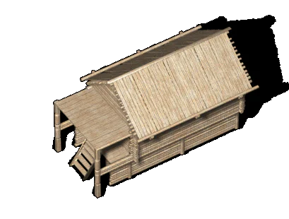

 |
Наземные жилища |
|
| Наземные жилища в XII
веке стали преобладающим типом жилищ. Практически все они были срубными. Для строительства использовали в основном сосну, реже ель; совсем редко использовали дуб, в основном для хозяйственных построек. Диаметр бревна колебался от пятнадцати до двадцати пяти сантиметров, в пазах между бревнами клали мох. Стены, как правило, оставляли открытыми, не обмазанными глиной. Полы жилищ были дощатыми и лишь иногда глиняными. Доски пола клали на лаги или прямо на землю, иногда врубали в венец сруба. Устройство пола зависело от наличия подпольных ям. Эти ямы иногда были настолько большими, что составляли отдельные помещения дома. При достаточно плотном грунте и ровной площадке срубы ставили на землю без дополнительных укреплений, но если грунт был рыхлым, а площадка -- неровной, то под углы дома подставляли деревянные столбы, иногда -- каменные. В некоторых областях под нижний венец сруба укладывали бревенчатые подкладки. Печи в наземных жилищах были как правило круглыми, глинобитными. Иногда их ставили посреди помещения, но чаще всего -- в углу рядом со входом. Топили печи исключительно по-черному. Наземные жилища были распространены в западной части древнерусской территории вплоть до Карпат, на территории Белорусии в XII веке жилища строились исключительно наземными. В это время наземные жилища начинают заменять полуземляные в Галицкой земле и на Волыни, на территории Рязанской земли и в восточных районах Чернигово-северской земли, на Днепре на границе со степью. |
Текст и
иллюстрации (c) 1997 Snowball Interactive Entertainment, Inc. |